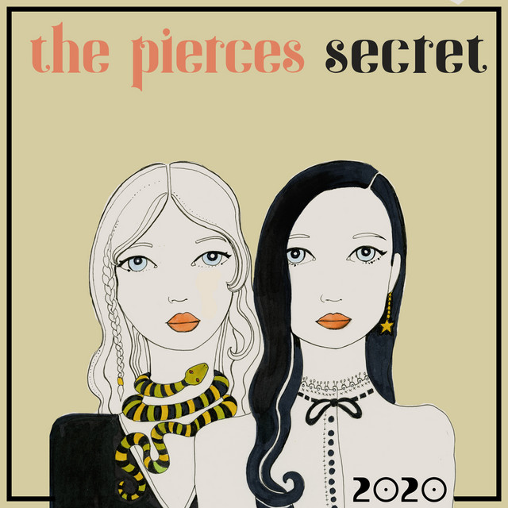

Trilha Sonora
A trilha sonora é uma parte fundamental da identidade de Pretty Little Liars. O tema de abertura, “Secret” de The Pierces, se tornou um ícone da série, com sua melodia misteriosa e letra que fala sobre guardar segredos — o que resume bem o enredo. A escolha das músicas sempre visou acompanhar o clima das cenas, indo de momentos românticos a passagens de puro suspense.
Durante os episódios, músicas de artistas como Florence + The Machine, Cassadee Pope, The Civil Wars, Mumford & Sons, Birdy, e Colbie Caillat embalam os sentimentos das protagonistas. Algumas músicas reforçam cenas de tensão, enquanto outras marcam reviravoltas emocionais, como términos ou reconciliações. Em muitos momentos, a trilha dá dicas sobre o que está por vir, quase como se fosse mais um personagem.
A série chegou a lançar coletâneas com músicas destacadas, que os fãs adoravam ouvir fora da tela. Além disso, os próprios atores chegaram a divulgar playlists inspiradas em seus personagens. A música ajudou a criar a ambientação e fortalecer o vínculo emocional do público com as cenas mais marcantes.
